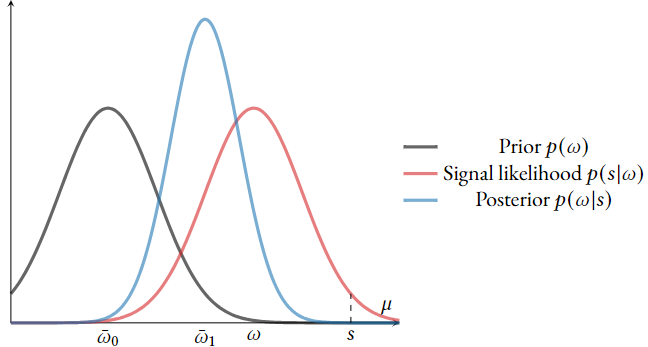

Sum rule
If \(A\) and \(B\) are subsets of \(\Omega\) with no elements in common, then \[
P(A\cup B)=P(A) + P(B).
\]
- For example, the probability of spinning \(Red\) or \(Green\) on the spinning wheel is equal to \(P(R) + P(G).\)
What about nonindependent events?
- If \(\Omega\) contains all human knowledge, then \[\small P(\text{Knowledge I have}\cup\text{Knowledge required in exam}) < \\
\small P(\text{Knowledge I have}) + P(\text{Knowledge required in exam}).\]
What about nonindependent events?
- Consider two subsets \(A,B\subset\Omega,\) with \(A\cap B\neq \varnothing\) (they are not independent).
- Then define:
- \(\small C \equiv A\cap B,\, A'\equiv A\setminus C,\, B' \equiv B\setminus C.\)
- Observe that \(\small P(A\cup B) = P(A'\cup B' \cup C).\)
- By the sum rule \(\small P(A'\cup B' \cup C) = P(A') + P(B') + P(C).\)
- Plug in \(\scriptsize P(C) = P(A\cap B),\, P(A') = P(A) - P(C),\, P(B') = P(B)-P(C)\) to arrive at \(\small P(A\cup B) = P(A) + P(B) - P(A\cap B)\)
Product rule
\(A\) and \(B\) are independent if
\[
P(A\cap B)=P(A)P(B).
\]
E.g., the prob. of simultaneously tossing tails on a coin and rolling six on a die is \(\frac{1}{2}\times\frac{1}{6} = \frac{1}{12}.\)
Conditional probability
\[
P(A\mid B)=\frac{P(A\cap B)}{P(B)},\qquad P(B)>0.
\]
- This is a generalization of the product rule. To see this, rearrange the def. to \(P(A \cap B) = P(A|B)P(B).\)
- If \(A\) is independent of \(B,\) then \(P(A|B) = P(A)\) and we are back to the product rule.
The conditioning order matters
Consider the following statement:
“One third of sports injuries in Germany are football-related. No other sport generates so many injuries. Therefore, football is the most dangerous sport”
The line of argument is: (i) \(\small P(\text{Sport}|\text{Injury})\) is maximal for \(\small \text{Sport = Football}.\) (ii) Therefore, \(\small P(\text{Injury}|\text{Sport})\) is maximal for \(\small\text{Sport = Football}.\) But (ii) does not necessarily follow from (i)!
The conditioning order matters
Suppose that this is the true joint distribution of sports activity and injuries:
| Injury |
3.3% |
6.7% |
| No injury |
45% |
45% |
The conditioning order matters
Suppose that this is the true joint distribution of sports activity and injuries:
| Injury |
3.3% |
6.7% |
| No injury |
45% |
45% |
- The probability of play football conditional on injury is \[
\small P(\text{Play football} | \text{Injury}) = \frac{3.3\%}{3.3\% + 6.7\%} = \frac{1}{3}
\]
The conditioning order matters
Suppose that this is the true joint distribution of sports activity and injuries:
| Injury |
3.3% |
6.7% |
| No injury |
45% |
45% |
- The probability of injury conditional on play football is \[
\small P(\text{Injury} | \text{Play football}) = \frac{3.3\%}{3.3\% + 45\%} \approx 6.8\%
\]
The conditioning order matters
Suppose that this is the true joint distribution of sports activity and injuries:
| Injury |
3.3% |
6.7% |
| No injury |
45% |
45% |
- The probability of injury conditional on play other sport is \[
\small P(\text{Injury} | \text{Play other sport}) = \frac{6.7\%}{6.7\% + 45\%} \approx 13.7\%
\]
Bayes’ theorem. If \(A\) and \(B\) are subsets of \(\Omega\) and \(P(A),P(B)>0,\) then
\[
P(A\mid B)=\frac{P(A)\;P(B\mid A)}{P(B)}.
\]
This is an implication of the cond. probability definition. We know: \[
\small P(A|B) = \frac{P(A\cap B)}{P(B)},\, P(B|A) = \frac{P(B\cap A)}{P(A)}.
\]
This is an implication of the cond. probability definition. We know: \[
\small P(A|B) = \frac{P(A\cap B)}{P(B)},\, P(B|A) = \frac{P(B\cap A)}{P(A)}.
\]
Plug these definitions into Bayes’ theorem and confirm that the rhs is equal to the lhs: \[
\small \frac{P(A\cap B)}{P(B)} = \frac{P(B\cap A)}{P(A)}\frac{P(A)}{P(B)} \Rightarrow P(A\cap B) = P(B\cap A).
\]
Bayes’ theorem as a foundation of learning
Consider the following example of a medical test.
Sasha gets screened for a rare form of cancer that around 1 in 1000 people in Sasha’s demographic have.
The test result is positive. What’s the probability that Sasha has cancer?
Sasha’s example contd.
- The test can be positive (\(+\)) or negative(\(-\)).
- Sasha can have cancer (\(C\)) or not (\(\bar{C}\)).
- Possible states of the world: \(\scriptsize \Omega = \{(C,+), (C,-), (\bar{C}, -), (\bar{C}, -)\}.\)
- Applying Bayes theorem: \[
\scriptsize P(C|+) = \frac{P(C)P(+|C)}{\underbrace{P(C)P(+|C) + P(\bar{C})P(+|\bar{C})}_{=P(+)}} = \frac{0.001 \cdot 0.99}{0.001\cdot 0.99 + 0.999\cdot 0.02} \approx 4.8\%.
\]
Expectations
- If the states of the world have a numerical ordering, we can calculate the expected value.
- E.g., die rolls have a numerical ordering (\(\small\Omega = \{1,2,3,4,5,6\}\)).
- In such cases the unconditional expectation is equal to \(\small \mathbb{E}[\omega] = \sum_{\omega\in\Omega}P(\omega)\omega.\)
- Conditional expectations work similarly as conditional probabilities: \(\small \mathbb{E}[\omega|B] = \frac{\sum_{\omega\in B}P(\omega)\omega}{\sum_{\omega\in B}P(\omega)}.\)
- E.g., the expected die roll conditional on being larger than 3 is: \(\small\mathbb{E}[\omega|\omega>3] = \frac{\frac{1}{6}\left(4+5+6\right)}{\frac{1}{2}} = 5.\)
Martingale Property (Law of Iterated Expectations)
\[
\small \mathbb{E}\left[\mathbb{E}[\omega | B]\right]=\mathbb{E}[\omega].
\]
Conditioning then averaging returns the unconditional mean.
Implication. I cannot expect to change my expectation in any particular direction in the future.
Law of Iterated Expectations (Martingale Property)
\[
\small \mathbb{E}\left[\mathbb{E}[\omega | B]\right]=\mathbb{E}[\omega].
\]
E.g., denote tomorrow’s expected temperature by \(\mathbb{E}[T].\) This expectation might change depending on a future weather report, \(\mathbb{E}[T|\text{weather rep.}].\) However, not knowing the future weather report, \(\mathbb{E}[\mathbb{E}[T|\text{weather report}]] = \mathbb{E}[T].\)
I cannot expect that listening to the weather report will make me more optimistic about tomorrow’s weather.
Martingale Property, implications
- This property underlies rational learning: you cannot systematically expect to revise your beliefs in a particular direction.
- If you become more optimistic after some information, there must be some other kind of information that makes you more pessimistic.
\(\uparrow\) Inconsistent with martingale property
Beliefs = Subjective Probabilities
- SEU implies individual beliefs must obey probability laws.
- This has profound implications:
- When learning new information, beliefs are updated according to Bayes’ rule.
- Beliefs adhere to the martingale property.
- Bayesian updating describes the process of learning from information using Bayes’ theorem.
- General structure: \[
\small \text{Prior belief} \rightarrow \text{ Information} \rightarrow \text{Posterior belief.}
\]
- We will learn the mechanics of Bayesian updating in two cases that are often used in applied economic research.
Binary State + Binary Signal Model
This model has a binary state, \(\Omega=\{H,L\},\) and agents receive binary signals, \(s\in\{g,b\}\).
- Think: Stocks will either decrease or increase (state), news can either be good or bad (signal).
The model specifies the prior belief, \(P(H)=\lambda\), and signal precision: \[
\small P(s = g|\omega = H) = q_g,\, P(s = b|\omega = L) = q_b,\quad q_g,q_b \geq \frac{1}{2}.
\]
Binary State + Binary Signal Model
Proposition. In the binary-binary model, \[
P(H\mid g)=
\frac{\lambda q_g}{\lambda q_g+(1-\lambda)(1-q_g)},\\
P(H\mid b)=
\frac{\lambda(1-q_b)}{\lambda(1-q_b)+(1-\lambda)q_b}.
\]
We can use Bayes theorem to derive the following result:
\[
\small\frac{P(H\mid g)}{P(L\mid g)}=
\frac{\lambda}{1-\lambda}\frac{q_g}{1-q_g}.
\]
- Posterior LR = Prior LR × Signal strength.
- More precise signals move beliefs more.
We can easily iterate the LR form to derive that, after \(\gamma\) good & \(\beta\) bad signals (with \(q_g=q_b=q\)):
\[
\small\frac{P(H\mid\gamma g+\beta b)}{P(L\mid\gamma g+\beta b)}=
\frac{\lambda}{1-\lambda}\Bigl(\frac{q}{1-q}\Bigr)^{\gamma-\beta}.
\]
Only the excess of good over bad news matters.
Binary-Binary Model Implications
- Posterior beliefs depend on:
- Prior belief: The higher \(\lambda,\) the higher \(P(H|I)\) after any finite number of signals \(I\).
- Signal precision: The higher \(q_g,\) the higher \(P(H|g)\) (and vice versa for \(b\)).
- As the number of signals grows to infinity, the belief converges to the truth.
Normal–Normal Model
This model has a real-valued state, \(\Omega=\mathbb{R},\) and agents receive real-valued signals, \(s\in\mathbb{R}.\)
- Think: Company valuation (state), yearly revenue (signal).
The model specifies the prior belief, \(\omega\sim\mathcal N(\bar\omega_0,\sigma_0^2),\) and signal precision: \(\small s\mid\omega\sim\mathcal N(\omega,\sigma_s^2).\)
Normal-Normal Model
Proposition. In the binary-binary model, \[
\small\omega\mid s\;\sim\; \mathcal N\!\bigl(\bar\omega_1,\sigma_1^2\bigr)\text{ with } \\
\small\bar\omega_1=\alpha s+(1-\alpha)\bar\omega_0,\quad
\sigma_1^2=\frac{\sigma_s^2\sigma_0^2}{\sigma_s^2+\sigma_0^2},\quad
\alpha=\frac{\sigma_0^2}{\sigma_0^2+\sigma_s^2}.
\]
- Posterior mean = precision-weighted average of prior mean & signal.
- Posterior variance < prior variance \(\rightarrow\) beliefs tighten.
Graphical Intuition
Posterior lies between prior and likelihood; the variance shrinks when going from prior to posterior.
Normal-Normal Model Implications
- The lessons we can draw from normal-normal are very related to the lessons we can draw from binary-binary.
- Posterior beliefs depend on:
- Prior belief: The higher \(\bar{\omega}_0,\) the higher \(\bar{\omega}_1\) after any finite number of signals.
- Signal precision: The smaller \(\sigma_s,\) the larger is the posterior belief movement towards the signal.
- As the number of signals grows to infinity, the expected value \(\bar{\omega}_1\) converges to the truth and the variance \(\sigma_1\) goes to zero.
Summarizing the updating results
- Beliefs in SEU are subjective probabilities; Bayesian agents obey probability laws.
- Binary model: posterior LR = prior LR × signal likelihoods.
- Normal–normal: posterior = precision-weighted average of prior and signal.
- Precision determines learning speed; agents eventually learn the truth.
Takeaways
- Beliefs are subjective probabilities that guide decisions under uncertainty.
- Probability rules (sum, product, conditional, Bayes, martingale) are foundational for rational beliefs.
- Bayesian updating: Posterior beliefs depend on prior and signal precision; likelihood ratios summarize belief changes.
- Tractable models of Bayesian updating exist. We learned about two such models, binary-binary and normal-normal.